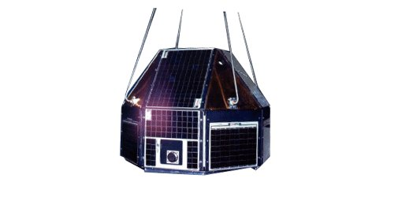
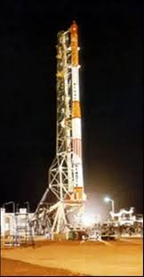
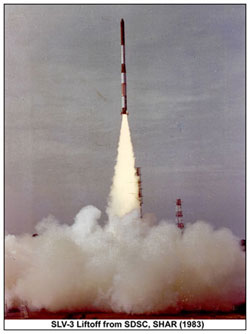
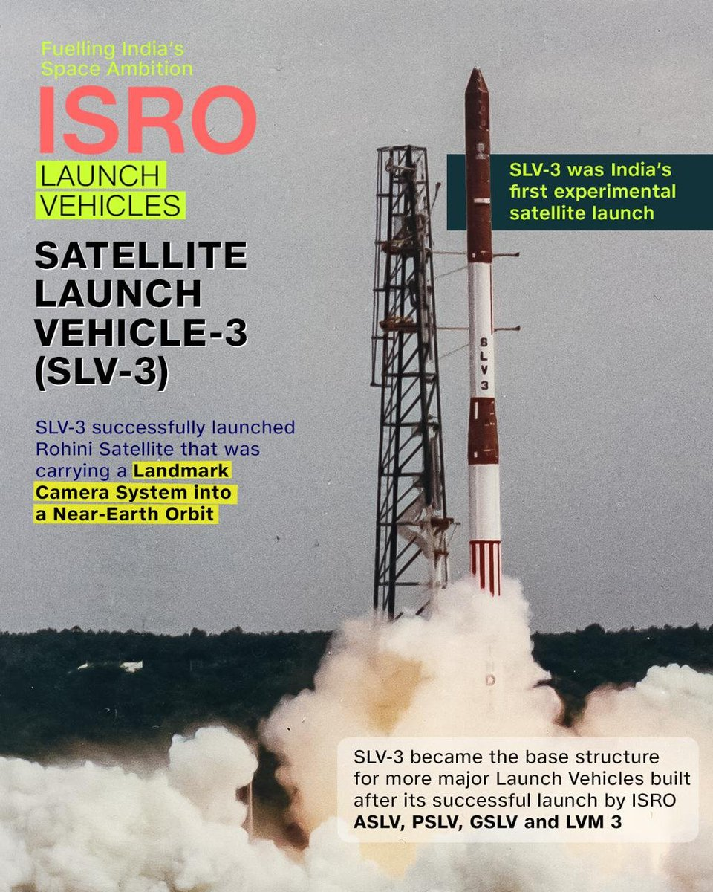

On July 18, 1980, India launched a satellite using its own rocket for the first time. SLV-3 — the Satellite Launch Vehicle — lifted off from Sriharikota. A young A.P.J. Abdul Kalam led the mission. India became the 6th nation capable of launching its own satellites. Everything that followed was built on this foundation.
Watch: Rohini Satellite LaunchThe Rohini satellite series — launched aboard India's Satellite Launch Vehicle (SLV-3) — represents the moment India stopped depending on other nations' rockets. When SLV-3 lifted Rohini RS-1 into orbit on July 18, 1980, India joined an elite club of six nations capable of building and launching their own satellites on their own rockets.
SLV-3 was a four-stage, all-solid-propellant rocket — meaning it used solid fuel in all four stages, making it simpler to manufacture and store than liquid-fuelled rockets. It was designed entirely by Indian engineers at VSSC (Vikram Sarabhai Space Centre) in Thiruvananthapuram, led by Project Director A.P.J. Abdul Kalam — who would later become India's President.
The first SLV-3 launch in August 1979 failed — the satellite fell into the sea. The second, on July 18, 1980, succeeded perfectly. Rohini RS-1 entered orbit. India had done it. The third and fourth launches followed, each more capable than the last.
SLV-3 was India's first indigenously developed satellite launch vehicle — a 22-metre tall, four-stage rocket powered entirely by solid propellants. Solid rockets are simpler than liquid-fuelled ones: no pumps, no complex plumbing, no cryogenic handling. They can be stored ready to launch. For a country building its first rocket, solid propellant was the right engineering choice.
Stage 1 used a large solid motor generating ~500 kN of thrust. Stages 2, 3, and 4 progressively smaller, each optimised for their altitude and velocity regime. The fourth stage placed the Rohini satellite directly into orbit.
SLV-3's heritage directly led to the Augmented Satellite Launch Vehicle (ASLV), the Polar Satellite Launch Vehicle (PSLV), and eventually the LVM3 that launches Gaganyaan today. Every Indian rocket traces its lineage to SLV-3.
Dr. A.P.J. Abdul Kalam served as Project Director of SLV-3 — his first major leadership role in India's space programme. The failure of the first launch in 1979 was a personal as well as professional blow. He analysed every subsystem, identified the control failure, redesigned the guidance algorithm, and led the team back to the launch pad.
The success of July 18, 1980 made Kalam nationally famous. He went on to lead India's missile development programme (DRDO's Integrated Guided Missile Development Programme), develop the Agni and Prithvi missiles, serve as Principal Scientific Adviser to the Government of India, and become the 11th President of India in 2002 — the only scientist and only space engineer to hold that office.
Kalam always said that SLV-3's success was the moment he understood what India's scientists could achieve. The Rohini satellite was 40 kg. The lesson it carried was immeasurable.
Swipe or click arrows to browse. Click any photo to zoom.


